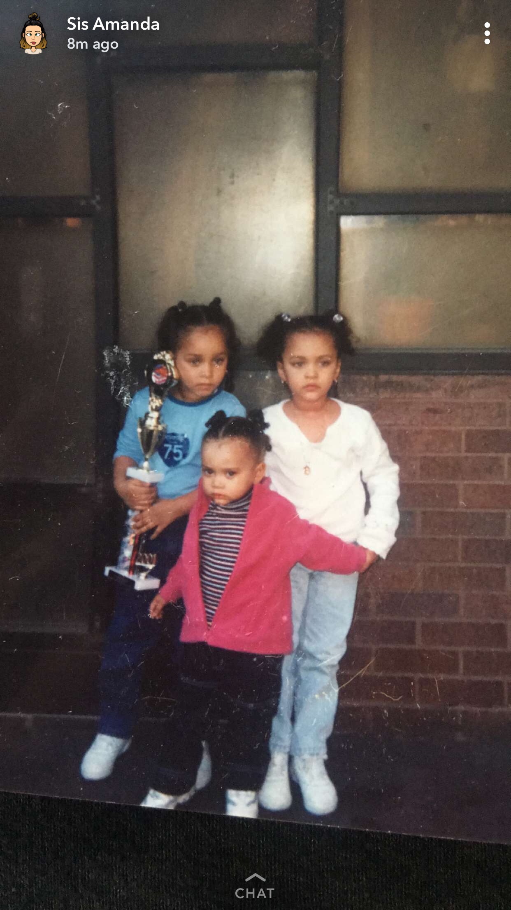
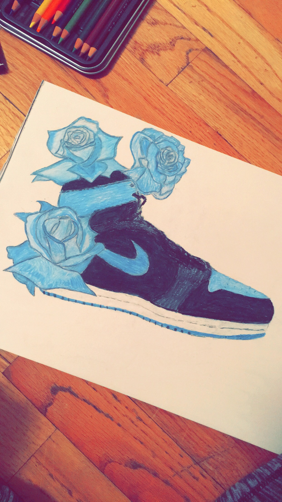
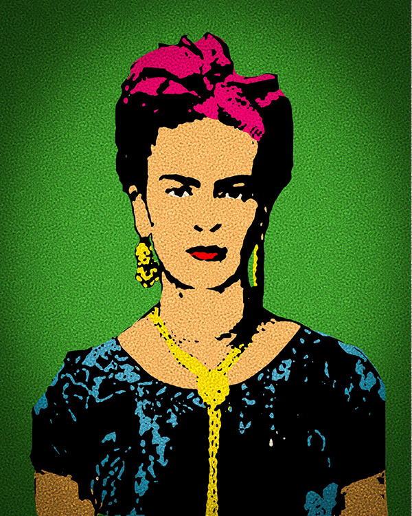
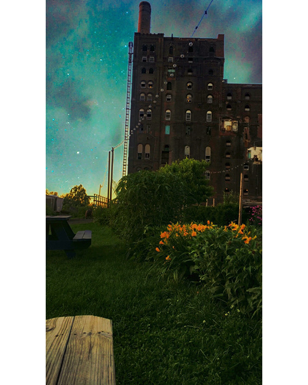

I am the oldest of 3 girls, my sisters mean the world to me and I wouldn't be who I am without them.

I love to draw, when I was in middle school I use to have nike sneakers that made me feel like the coolest person ever.

She inspired me as a artist when I was younger.

This is an image of a bench I sit on a lot when I have to seriously think about my life.This image represents me because I saw this guy on the subway, and it just motivates me to one day create subway art, designs, or advertisements that won't make people sleep and wish they weren't on the train.Go Back